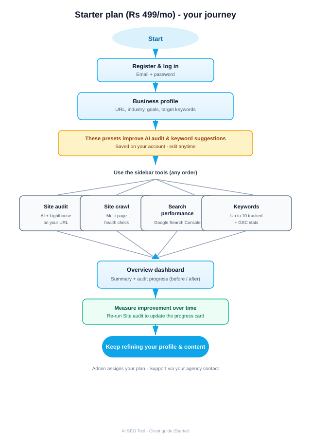
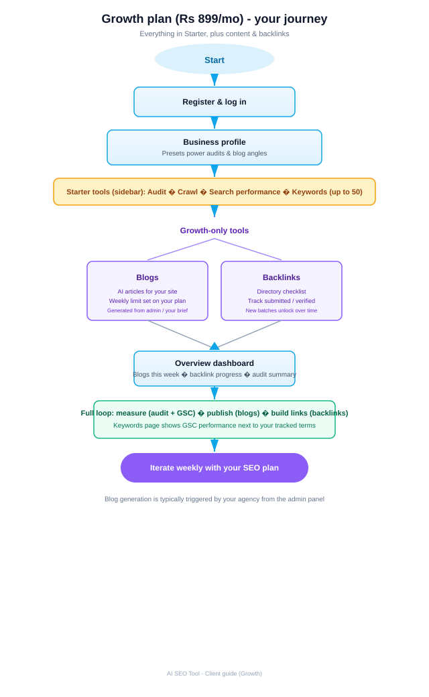
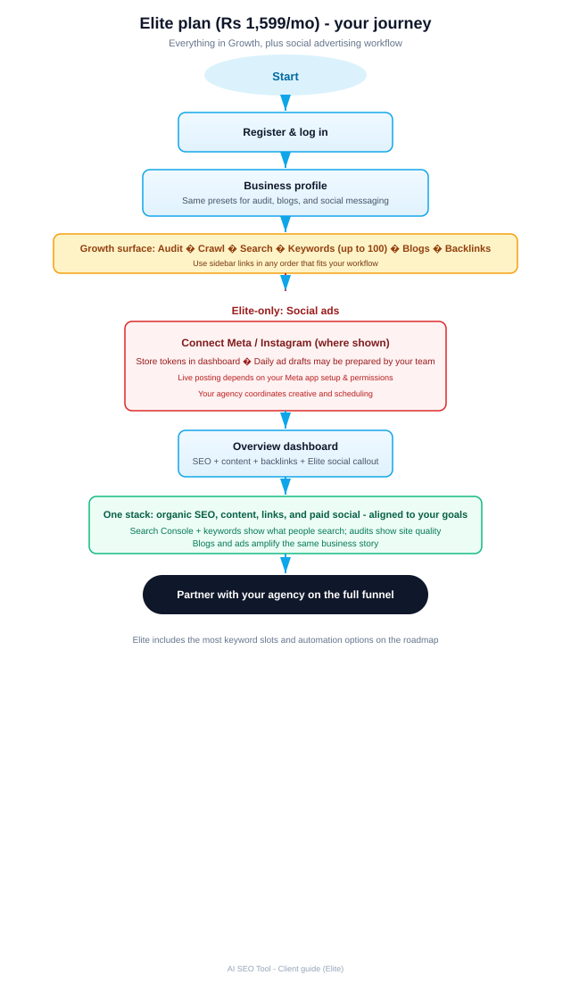

Audience: Business clients using the platform Scope:Phase 0–4: presets; Search Console and keywords; execution (calendar, checklist, social packs, audit blocks); scale (unified growth score, competitor watchlist, lead-magnet landing copy, social proof lines, monthly executive email with PDF on Elite). Updated: March 2026
How to get a Microsoft Word file (.docx)
1. Save this HTML file and the three flowchart-*.svg images in the same folder (do not rename the SVG files).
2. Open Microsoft Word → File → Open → choose this Client-Product-Guide.html file.
3. Word will import the layout; then use File → Save As → Word Document (*.docx).
If a flowchart image is missing, insert it manually: Insert → Pictures → pick the matching .svg file.
1. What this tool does (in plain language)
AI SEO Tool helps you understand how your website is performing, see what people search for (when you connect Google Search Console), and track important keywords next to real click and ranking data. It uses your business profile (industry, goals, keywords you care about) so AI-generated audits and content suggestions match your business—not a generic template.
Depending on your plan, you may also get AI blog drafts, a backlink checklist, and (on Elite) a social ads area for Meta/Instagram—usually coordinated with your agency.
2. Plan comparison — what is included
Capability
Starter ₹499/mo
Growth ₹899/mo
Elite ₹1,599/mo
Dashboard overview & business profile
✓
✓
✓
Industry vertical & marketing goal presets (shapes AI outputs)
Social proof lines (two audits required for numbers)
✓
✓
✓
Monthly executive email (+ PDF on Elite)
—
✓ (opt-in, HTML)
✓ (opt-in + PDF)
AI blogs + library
—
✓ (weekly limit on plan)
✓
Backlink directory checklist
—
✓
✓
Content calendar (pillars + manual)
✓ (up to 2 items)
✓ (large capacity)
✓ (large capacity)
On-page checklist per URL
✓
✓
✓
Social caption packs
✓ (audit: LinkedIn only)
✓ (audit + blog: 3 platforms)
✓ (audit + blog: 3 platforms)
Site audit: CTA/forms, FAQ, objections, lead capture
✓
✓
✓
Social ads (Meta / Instagram workflow)
—
—
✓
Your agency activates the plan and can adjust blog/backlink limits. Google Search Console requires your Google account and a verified property.
3. Starter plan — step-by-step usage
Who it is for: Businesses that want structured SEO audits, crawl insights, search query visibility, and keyword tracking without the full content/backlink bundle.
3.1 Visual flow (Starter)

Figure 1 — Typical Starter client journey from login to measurement.
3.2 Steps
Receive access — Your admin creates your account and assigns the Starter plan. You get login details by email (or from your agency).
Log in — Open the app URL, sign in with your email and password.
Complete Business profile — Go to Dashboard → Business profile. Enter your website URL, business name, free-text industry, target keywords (comma-separated), and choose Industry vertical and Marketing goal. Save. These values tune the AI for Site audit and feed automatic keyword suggestions.
Run Site audit — Open Site audit, enter or confirm your page URL, run the audit. Review findings, Lighthouse scores (performance, SEO, accessibility, best practices), and AI deliverables. Re-run later to compare progress (see Overview).
Run Site crawl — Use Site crawl for a broader multi-page health picture when available on your account.
Connect Search Console (optional but recommended) — Under Search performance, click to connect Google, pick the property that matches your site, then Sync now. You will see top search queries for roughly the last 28 days (read-only access).
Review Keywords — Open Keywords. The app pre-fills terms from your profile, latest audit “content pillars,” and top Search Console queries (within your 10-keyword cap). Edit, remove, or add phrases; export CSV if needed. Matching GSC stats appear when data exists.
Check Overview — Short audit summary, Audit progress (first vs latest audits), and the Unified growth score with an expandable “why this score” breakdown.
Competitors — Dashboard → Competitors. Save competitor homepages and use Refresh snapshot to diff title, meta description, and H1 counts (plan limits: 1 / 3 / 5 URLs).
Content calendar — Dashboard → Content calendar. Add items or seed from a Site audit (imports content pillar ideas). Starter keeps a small number of rows; higher plans allow many.
On-page checklist — Dashboard → On-page checklist. Enter your page URL, Save checklist, then check off tasks (meta, H1, schema, speed, links, conversion). Progress is saved per URL.
Site audit extras — CTA and form tips, FAQ, objections, lead capture scoring, lead-magnet landing blocks (headline, bullets, form intro), and social proof lines after you have two audits with measurable movement.
Social captions from an audit — On the Site audit page, use Generate captions on a run. Starter receives LinkedIn text only; Growth/Elite receive three platforms.
4. Growth plan — step-by-step usage
Everything in Starter, plus blogs and backlinks. Use the same profile and SEO tools; add content and link-building workflows.
4.1 Visual flow (Growth)

Figure 2 — Growth plan adds blogs and backlink checklist to the Starter journey.
4.2 Extra steps (on top of Starter)
Blogs — Open Blogs. Your agency (or automation you agree with them) generates AI articles aligned to your presets. You can copy text, mark status (e.g. published), and stay within your weekly blog limit (shown on the dashboard).
Backlinks — Open Backlinks. Work through the directory checklist: submit where appropriate, update status to submitted or verified. New batches may unlock over time when the previous batch is complete—your Overview shows progress.
Keywords limit — Up to 50 tracked keywords with GSC matching; use Refresh suggestions on the Keywords page after you change your profile or sync Search Console.
Social post pack from a blog — Open any blog post and use Social post pack → Generate from this blog to create LinkedIn, Instagram, and Facebook captions (Growth/Elite).
Monthly executive email — Business profile: opt in to a scheduled HTML summary (server needs Resend). Elite adds a PDF attachment.
5. Elite plan — step-by-step usage
Everything in Growth, plus the Social ads area for Meta/Instagram-related workflows (tokens, drafts—posting depends on Meta app setup).
5.1 Visual flow (Elite)

Figure 3 — Elite adds social advertising coordination to the Growth journey.
5.2 Extra steps (on top of Growth)
Social ads — Go to Social ads. Connect or refresh Meta/Instagram credentials where the UI allows. Your agency typically prepares ad drafts; publishing may require additional Meta Business setup.
Keywords limit — Up to 100 tracked keywords.
Monthly PDF — With executive email opt-in, Elite includes a one-page PDF brief attached to the same monthly message.
6. How automatic keyword suggestions work
Phrases are suggested from your target keywords field, industry text, business name, vertical label, and content pillar ideas from your latest Site audit.
After Search Console syncs, top queries can fill remaining slots up to your plan limit.
Suggestions add rows; they do not delete keywords you edited or removed unless you use Refresh suggestions (which merges new ideas up to the cap).
When you edit a keyword’s text and save, it is treated as yours (manual) so the system prioritizes your wording.
7. Roles — what you do vs your agency
Topic
You (client)
Agency / admin
Plan & billing
Use features included in your plan
Assigns plan, may generate blogs or social drafts
Business data
Edit Business profile anytime
Can override profile fields if you ask them to
Google Search Console
Connect your Google account (read-only)
May guide you on property verification
Audits & crawl
Run audits and review results
May advise on fixes outside the app
8. Phase 4 in one place
Unified growth score rolls lab SEO, opportunity index, momentum between audits, and execution (checklists + blogs on Growth+) into one 0–100 readout. Competitors store homepage snapshots you can refresh. Lead-magnet blocks and social proof lines reuse audit output. Monthly email (Growth/Elite, opt-in) summarizes the dashboard; Elite can attach a PDF.
9. Phase 3 recap
Content calendar, on-page checklist, and social packs turn audits into weekly work. Extended audit blocks add CTA, FAQ, objection, and lead capture copy on every run.
10. Glossary
Lighthouse / lab scores — Automated quality scores for performance, SEO, accessibility, and best practices (from Google’s tooling pipeline in the product).
Search Console — Google’s tool showing queries that showed your site in search; we import recent aggregated query stats after you authorize read-only access.
Tracked keyword — A phrase you (or the app) track; we try to match it to a Search Console query to show clicks, impressions, and average position.
Before / after (audit progress) — Compares metrics from your earliest saved audit to your newest one so you can see movement over time.
Growth score (v1) — Weighted blend of latest lab SEO, opportunity index, trajectory between audits, checklist completion, and (on Growth+) blog cadence, minus a small deduction for unresolved high-severity findings.
Competitor snapshot — A stored fetch of a competitor URL’s title, meta description, and H1 count; refreshing replaces the snapshot and shows a diff from the previous capture.
AI SEO Tool — Client Product Guide · Phases 0, 2, 3 & 4 · Include the three SVG flowcharts when sharing this HTML, or distribute the generated Word document.